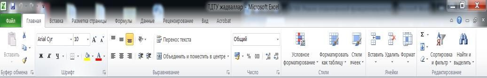
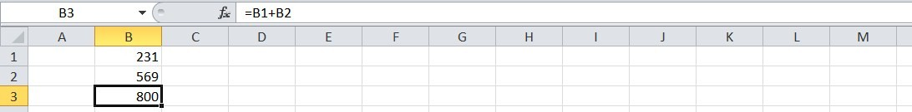

1-DARS. SODDA IFODALARNI HISOBLASH
MS Excel 2010 elektron jadvalida yangi interfeysi asosida tasma (ingliz tilida “Ribbon”) deb nomlanuvchi va asosiy oynaning yuqori qismida joylashgan ko‘p varaqli soha joylashgan.

MS Excel 2010 ning tasmaning har bir bo‘lagida muayyan vazifalarni bajarishga mo‘ljallangan tugmalar majmuasi jamlangan:
Главная – jadvallardagi ma’lumotlarni kiritishga va tahrirlashga mo‘ljallangan;
Вставка – jadvalga biror rasm, diagramma kabi obyektlarni joylashtirishga mo‘ljallangan;
Разметка страницы - jadval varaqlarini bosmaga chiqarish uchin sahifalarning chegaralari va boshqa parametrlarini belgilash uchun mo‘ljallangan;
Формулы – jadvallardagi hisoblashlarni amalga oshiruvchi har xil formulalardan foydalanish uchun mo‘ljallangan;
Данные - jadvallarning ustun va satrlaridagi ma’lumotlarni filtrlash, saralash, nusxalarini ko’paytirish, keraksizlarini yo’qotish, tashqi axboratlarni kiritish;
Рецензирование – matn xatolarini tuzatish va hujjatlarni tahrirlash;
Вид – jadvallarni ekranda turlicha namoyish qilishga moslashtirish.
Bosh oynaning yuqori chap burchagida tez-tez ishlatiluvchi murojaatni osonlashtiruvchi panel mavjud bo‘lib, u yerda xotirada saqlash, oxirgi amalni bekor qilish kabi amallarni tez va oson bajarish mumkin.
Ushbu panelga yangi buyruqlar kiritish orqali imkoniyatini oshirish mumkin. Tasmaning tagida elektron jadvalning ishchi sohasi joylashgan. Jadval ko‘rinishida berilgan fayl Excelda kitob (Книга) deb ataladi. Kitob esa varaq (Лист) lardan tashkil topgan. Standart holatida ular uchta bo‘lib, zaruriyat tug‘ilganda ko‘paytirilishi yoki kamaytirilishi mumkin.
MS Excel 2010 ning standart varag‘i harflar orqali belgilanuvchi 16348 ustun va raqamlar orqali ifodalanuvchi 1 048 576 satr mavjud bo‘lib, ustunlar A harfidan boshlanib XFD bilan tugallanadi. Varaqdagi alohida olingan har bir katak o‘z nomiga va manziliga: A3, C45 ega bo‘ladi. Qaralayotgan katakni faollashtirish uning ustida sichqonchaning chap tuqmasini bosish orqali amalga oshiriladi. Jadvalning tagida holat satri bo‘lib, u yerda ishchi sohaga tegishli ma’lumotlar berilgan.
Jadvalga qiymat kiritib, amallar bajarish tugallangan bo‘lsa, shichqoncha orqali (masalan B2:F5) bloklarni ajratib olish mumkin.
1-mashq. B1 katakka 231 ini, B2 katakga 569 ni kiritib, ularning yig‘indisini B3 da hosil qiling.
Bajarish: B3 katakka = belgisini yozish orqali MS Excel 2010 kiritish rejimiga o‘tadi. So‘ngra sichqonchaning chap tugmasi B1 katak ustida bosilganda, ushbu manzil B3 da hosil bo‘ladi. Navbatdagi qadamda + kiritilib, keyin B2 katak ustida yana sichqonchaning chap tugmasi bosiladi. Natijada B3 da B1+B2 yozuvi paydo bo‘ladi. Enter tugmasi bosilgandan so‘ng, bajarilgan amal natijasi B3 da hosil bo‘lib, Formulalar satrida =B1+B2 ifoda yoziladi.

Yuqoridagi kabi boshqa arifmetik amallarni bajarish mashq sifatida ko‘rib chiqishimiz mumkin.
MS Excel 2010 da ishlash jaroyonida turli xatolar yuzaga kelishi mumkin. Ko‘p uchraydigan xatolar tavsifi xususida to‘xtalib o‘tamiz:
###### – ma’lumot katakka sig‘magan.
#ДЕЛ/0 – hisoblash formulasida 0 ga bo‘lish holati mavjud.
#ЗНАЧ! – formulada mumkin bo‘lmagan ifodalar qatnashmoqda, masalan: kirill shriftida o‘zgaruvchilar ishlatilayotgan bo‘lishi mumkin.
#ИМЯ? – Excel formuladagi o‘zgaruvchining nomini aniqlay olmadi.
#ЧИСЛО! - formulada funksiya o‘zgaruvchisi yoki qiymat noto‘g‘ri ishlatilmoqda.
#ССЫЛКА! – katakka noto‘g‘ri murojaat qilingan.
#ПУСТО! – katakka noto‘g‘ri oraliqda qiymat kiritilgan.
2-mashq. Quyidagi amallarni bajaring:
A1 katakka 23 sonni B1 ga 0 kririting va C1 katakda A1/B1 amalini bajaring va natijani tahlil qiling.
A1 katakka “Xato” matnini, A2 ga 10 kiriting va A3 katakda A1*A2 amalini bajaring va hosil bo‘lgan xatoning sababini aniqlang;
A1 katakka 1 sonini B1 ga 1 kririting va A3 katakda A1A/B1 amalini bajaring va hosil bo‘lgan xatoning sababini aniqlang;

A1 katakka 1 ni kiriting, B1 ga 2 ni kiriting, C1 da A1+B1 ni hisoblang, D1 katakka 15 ni kiriting, E1 ga 12 ni kiriting, F1 da D1–E1 ni hisoblang va G1 da C1*F1 ni hisoblang;
Yuqoridagi mashqlardan ko‘rinmoqdaki, MS Excel 2010 yordamida ixtiyoriy arifmetik amallarni tez va oson usulda hisoblash imkoniyati mavjud. MS Excel elektron jadvali kalkuliyatordan farqli bo‘lgan kengroq ifodalarni hisoblashda umumlashtirish imkoniyati ham mavjud. Ushbu imkoniyatlarni keyingi darslarda ko‘rib o‘tamiz.
1. Excel elektron jadvallarida ma’lumotning qanday turlari mavjud? A2D:H9 yozuvida qanday xatolik mavjud?
2. Berilgan uchta sonni yig‘indisini hisoblang.
3. Berilgan ikkita sonni ko‘paytmasini hisoblang va natijani to’rtinchi darajaga oshiring.

1. Excel elektron jadvali yordamida (a+b)*(c+d) ifoda o‘zgaruvchilarning ixtiyoriy qiymatlarida hisoblang.
2. Berilgan to’rtta sondan ikki juftlik ajrating va ularning bo‘linmasini hisoblang, natijalarni o’zaro ko’paytiringdan .